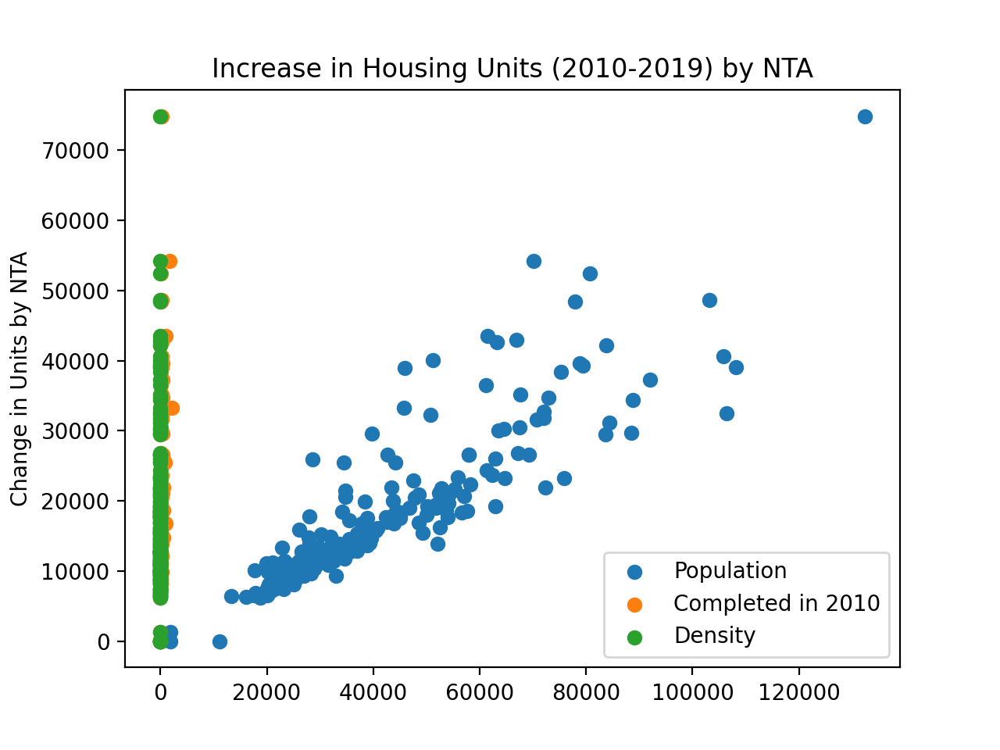
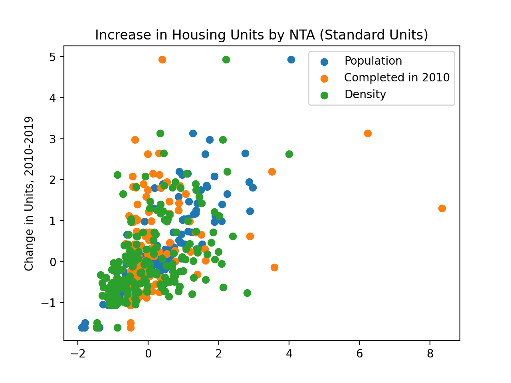

Program 7: Housing Model
CSci 39542: Introduction to Data Science
Department of Computer Science
Hunter College, City University of New York
Spring 2022
Classwork Quizzes Homework Project
General Notes
This program builds on the concepts and code developed during lecture and through the reading. Mastery of material is assessed via
- Autograding of the program submitted to Gradescope, and
- Completion of a timed coding quiz on the material. See Quizzes for details.
Autograder Notes
Submitted code must be in Python, using only the specified libraries. The autograder expects a .py file and does not accept iPython notebooks.
Also, to receive full credit, the code should be compatible with Python 3.6 (the default for the Gradescope autograders).
To encourage starting early on programs, bonus points are given for early submission. A point a day, up to a total of 3 bonus points (10% of the program grade), are possible. The points are prorated by hour. For example, if you turn in the program 36 hours early, then the bonus poins are: (36 hours/3 days)*3 points = (36 hours/72 hours)*3 points = 1.5 points.
To get full credit for a program, the file must include in the opening comment:
- Your name, as it appears in your Gradescope registration.
- The email you are using for Gradescope.
- A list of any resources you used for the program. Include classmates and tutors that you worked with, along with any websites or tutorials that you used. If you used no resources (other than the class notes and textbooks), then you should include the line: "No resources used."
Program Description
Program 7: Housing Model. Due noon, Thursday, 17 March.
This program continues the analysis from Program 6 of the NYC Housing Database.
NYC Department of City Planning (DCP) Housing Database contains all approved construction and demolition jobs since 2010. Summary information about it are provided via OpenData NYC. A summary, recorded as net housing units, by Neighborhood Tabulation Areas:
In Program 6, we looked at which features are most correlated with the increase in housing units. For this program, we will explore linear models for the dataset.
The assignment is broken into the following functions to allow for unit testing:
For example, if the housing and population data files are downloaded (and your functions are imported from a file answer), then a sample run of the program:
A way to see the relationships is to plot the data. Plotting the raw data with:

which is difficult to use for comparisons due to the difference in units between the different Series. We can transform the Series into standard units:

Learning Objective: to reinforce Pandas skills by aggregating and cleaning to use in map visualiation, and summary statistics methods in Pandas.
Available Libraries: pandas, sklearn and core Python 3.6+.
make_df(housing_file, pop_file):
This function takes two inputs:
The data in the two files are read and merged into a single DataFrame using housing_file: the name of a CSV file containing housing units from OpenData NYC.
pop_file: the name of a CSV file containing population counts from OpenData NYC.
nta2010 and NTA Code as the keys.
If the total is null or Yearis not 2010, that row is dropped.
The columns the_geom and nta2010 are dropped, and the resulting DataFrame is returned.
compute_lin_reg(x,y):
This function takes two inputs:
The series are of the same length and contain numeric values only (all null and non-numeric values have been dropped).
The function returns two numeric values: x: a Series containing numeric values.
y: a Series containing numeric values.
theta_0,theta_1 where
computed using theta_0 is the y-intercept of the best fitting line for x and y.
theta_1 is the slope of the best fitting line for x and y.
sklearn.linear_models (see Lecture 12 for details).
MSE_loss(y_actual,y_estimate)::
This function takes two inputs:
The series are of the same length and contain numeric values only (all null and non-numeric values have been dropped). The function returns the mean square error loss function between y_actual: a Series containing numeric values.
y_estimate: a Series containing numeric values.
y_actual and y_estimate (e.g. the sum of the squares of the differences).
compute_error(y_actual,y_estimate,loss_fnc)::
This function takes three inputs:
The series are of the same length and contain numeric values only (all null and non-numeric values have been dropped).
y_actual: a Series containing numeric values.
y_estimate: a Series containing numeric values.
loss_fnc: function that takes two numeric series as input parameters and returns a numeric value.
minimize(x,y,theta_0,theta_1,loss_fnc,step_fnc,num_steps=100):
:
This function takes ?? input:
Takes a Series of numeric values and converts to standard units, that is, it computes the mean and standard deviation of ser: a Series.
ser, and for
each s in ser, computes (s - mean)/(standard deviation) and returns the resulting series.
Returns the slope and the y-intercept found after num_steps of minimization.
And the first lines would be:
df = answer.make_df('Housing_by_NTA.csv','NYC_Pop_By_NTA.csv')
print('The DataFrame:')
print(df.head())
We can use our next function to compute a regression line for the The DataFrame:
OBJECTID boro ... NTA Name Population
1 195 Manhattan ... Stuyvesant Town-Cooper Village 21049
3 166 Bronx ... West Concourse 39282
5 37 Bronx ... Bronxdale 35538
7 14 Brooklyn ... Midwood 52835
9 65 Manhattan ... Yorkville 77942
[5 rows x 32 columns]Population and total columns:
We can plot the original data with the regression line:
b,m = answer.compute_reg(df['Population'],df['total'])
print(f'The regression line has slope {m} and y-intercept {b}.')
would give the plot:
xes = np.array([0,df['Population'].max()])
yes = m*xes + b
plt.scatter(df['Population'],df['total'])
plt.plot(xes,yes)
plt.title(f'Regression line with m = {m:{4}.{2}} and y-intercept = {b:{4}.{2}}')
plt.show() And the first lines would be:
And the first lines would be:
Borough Year FIPS County Code ... comp2019 total Shape__Area
0 Manhattan 2010 61 ... NaN 11240 5.582242e+06
1 Bronx 2010 5 ... 127.0 13998 1.937895e+07
2 Bronx 2010 5 ... 0.0 14622 1.518562e+07
3 Brooklyn 2010 47 ... 457.0 21773 3.579958e+07
4 Manhattan 2010 61 ... -67.0 48481 1.360204e+07
[5 rows x 12 columns]
We can compute a new column, representing population density:
And the relevant columns contain:
We can find the columns with the largest absolute correlation coefficient R:
And the first lines would be:
For the default list of columns, the most correlated is Population with r = 0.4001044380137653.
For ['comp2010', 'comp2015', 'comp2019'], most correlated is comp2010 with r = 0.4001044380137653.
yields
gives a plot where the relationships are clearer: